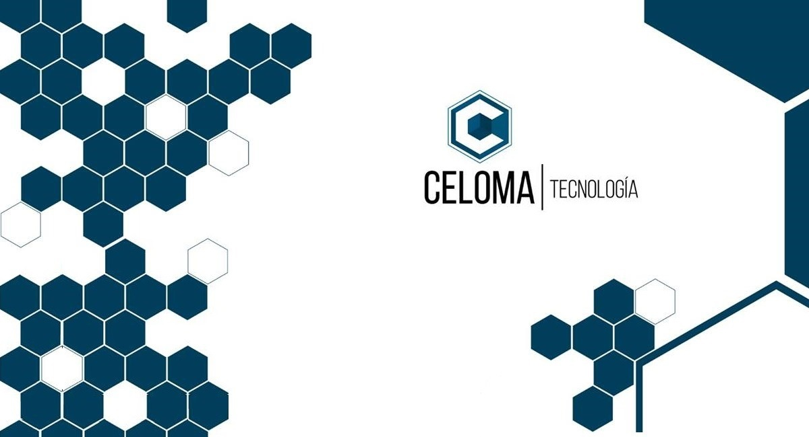

<!DOCTYPE HMTL>
<HMTL lang="es" dir="ltr">

    <head>
        <meta charset="utf-8">
        <link rel="stylesheet" href="style.css">
        <link href="https://fonts.googleapis.com/css2?family=Cairo:wght@500&family=Roboto:ital,wght@1,100&display=swap" rel="stylesheet">
        <title>Celoma Tecnologia</title>
    </head>

    <body>
        <header>

            <ul class="menu">
                
                <h3>Celoma Tecnologia</h3>
                <li><a href="index.html">Inicio</a></li>
                <li><a href="Servicios.html">Servicios</a></li>
                <li><a href="clientes.html">Clientes</a></li>
                <li><a href="Contactos.html">Contacto</a></li>
                <a class="facebook" href="https://www.facebook.com/celomatecnologia/"></a>
                <a class="facebook" href="https://www.instagram.com/celomatecnologia/"></a>
            </ul>

        </header>
        <div class="intruduccion">
            
            <div class="text">Conoce nuestro trabajo, trabajo de calidad y servicio. <br>
                Somos una empresa que ve el futuro, la digitalizacion de la informacion, con acceso <br>
                a ella rapida y organizada </div>
        </div>
        </div>
        <div class="a">
            <div class="Visionimg"></div>
            <h5><strong>Nuestra Visión</strong></h5>
            <p> Una visión debe demostrar a los administradores la intención futura del negocio, es decir que debe
                contestar a un interrogante:<br>
                <strong>¿Hacía donde vamos?</strong> en el largo plazo. Esto sirve como timon o guía para las
                decisiones.<br>

                <strong>"Celoma Tecnologia busca convertirse en uno de los principales agentes de cambio en la Republica
                    Argentina a traves de la<br> tecnologia y el desarrollo <br>
                    del conocimiento".</strong><br>
            </p>

        </div>
        ;
        <div class="b">
            <div class="preguntaimg"></div>
            <h5><strong>Nuestra determinación de la Misión</strong></h5>

            <p>La misión debe estar dirigida a responder tres preguntas:<br>
                <strong>¿Qué?:</strong> debe expresar que necesidad va a satisfacer-<br>
                <strong>¿Quién?:</strong> debe declarar a que segmento o publico estará satisfaciendo sus
                necesidades.<br>
                <strong>¿Como?:</strong> Que solución brindara a esa necesidad antes declarada.<br>

                <strong>"Celoma Tecnologia es un facilitador de herramientas y metodos para el desarrollo <br>
                    de capacidades tecnologicas que permitan a las distintas organizaciones
                    de San Luis evolucionar exponencialmente".</strong><br>
            </p>
        </div>
        <div class="c">

            <h5><strong>Filosofia y valores de Celoma Tecnologia</strong></h5>
            <p><strong>Digilosofia:</strong> La filosofía digital del Santander, es una idea transversal que define el
                <br>
                posicionamiento digital del banco. Esta filosofía gira en torno al cliente y lo pone en el centro; para
                <br>
                que este elija cómo, cuándo y dónde relacionarse con el banco y dedicar su propio tiempo a lo que
                considere<br>
                más importante.<br>
                Según Santander, Digilosofía es poner la tecnología al servicio de las personas y no al revés, para
                resolver las<br>
                gestiones del día a día de una manera rápida y sencilla, hablando poco y solucionando mucho.<br>
                <strong>Eficiencia</strong><br>
                <strong>Respeto</strong><br>
                <strong>Compromiso</strong><br>
            </p>
        </div>
    </body>
    
</HMTL>